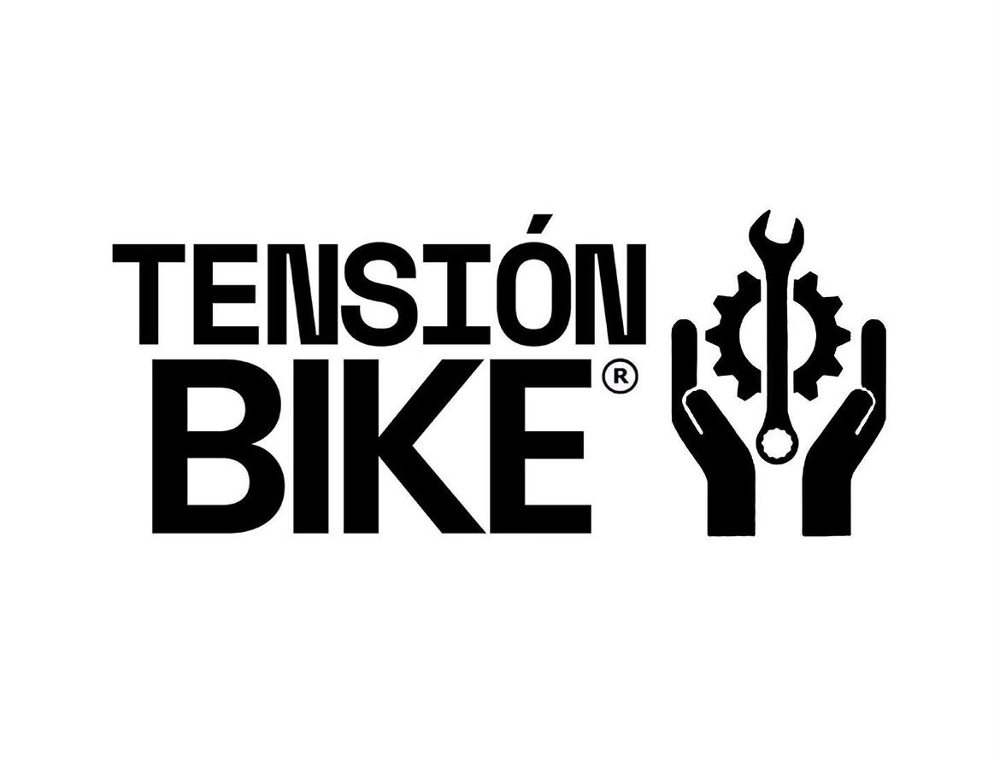
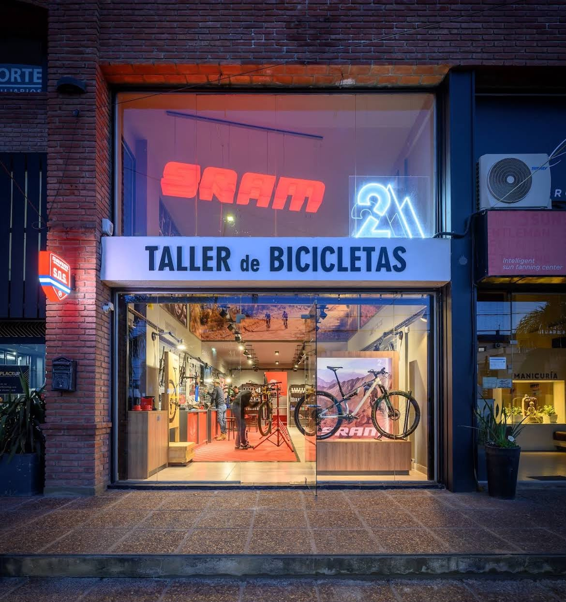

Beneficios y Recursos
Todo lo que necesitás para rodar seguro por Córdoba: alianzas exclusivas, soporte técnico por zonas y movilidad urbana.
¿No tenés bici propia? Usá Bici CBA
La Municipalidad de Córdoba cuenta con estaciones de bicicletas públicas gratuitas en puntos clave de la ciudad (Nueva Córdoba, Centro, Ciudad Universitaria). Podés registrarte con VeDi (Vecino Digital) y retirar tu bici para el ride.
🚲 Registrarme en Bici CBA
Comunidad Co-Branding
Aliados de Ruta

Venzo Argentina
Sponsor Oficial15% de descuento en componentes, cascos y mantenimiento integral presentando tu código de Coffee Ride.
Visitar Web →
Wake Up Bikes
Zona Nueva CórdobaAjustes rápidos de frenos, parches e inflador libre para salidas cortas urbanas por el centro histórico.
Ver Ubicación →
Tensión Taller
Zona CentroTaller especializado en barrio Alberdi con mecánicos profesionales y barra al aire libre.
Ver Ubicación →
SRAM
Zona NorteAsistencia técnica sobre la Avenida Recta Martinolli, repuestos de alta gama y soporte de emergencias.
Ver Ubicación →Checklist de equipamiento
Consejos de seguridad vial
Circulá por ciclovías
Córdoba tiene red de ciclovías: usala siempre que puedas. Evitá avenidas principales en horas pico.
Señalizá tus movimientos
Indicá giros con la mano. Los autos no saben a dónde vas si no lo decís.
Andá en grupo
Para rutas medias y avanzadas, siempre mejor en grupo. Compartí tu ubicación con alguien.